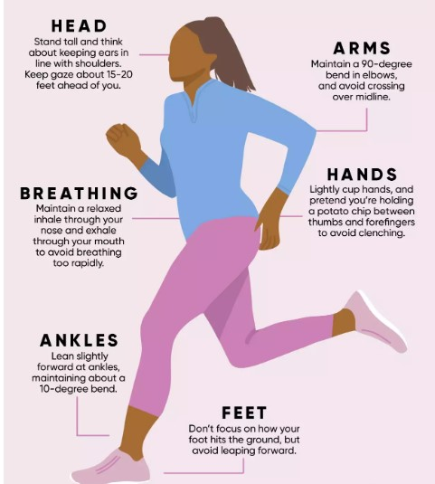

Especially if you have been training intensely, running injuries can be common and may even come at unexpected times. It is important to notice the signs of an injury and how best to treat it before it gets worse.
INJURY SIGNS
Though pain/sore legs are common, consistent pains can mean a running injury. Below injury signs:
- cannot finish a run w/o pain
- running in an awkward form/stride to ease pain
- leg tightness/pain for a long time
- pain + swelling
- pain when standing or walking
If you still have pain after resting 1-2 weeks, see your doctor or a sports medicine physician.
INJURY TREATMENT TIPS
- (RICE) rest (no running), ice, compression, and elevation
- stretch/massage injured area
- take pain relievers prescribed/recommended by doctor
INJURY PREVENTION
- Fixing form — proper running form should not involve discomfort while running. You also should land on the midsole of your foot while running, not tip-toes or heels. **See a good example of running form below.
- Warm up b4 stretching - stretch calf, hamstrings, and quadriceps more
INJURY PREVENTION (p2)
- Cross/strength training - weight training, core exercises, swim, bike, etc throughout the week
- Wear correct/proper shoes — replace old shoes every 300-500 mi (3-6 months)
- Go easy on hill/elevation running
*See example of good running form below:
Main Takeaway + More Resources
Running can be a very enjoyable hobby or passion, but it is important to make sure you train in a way and take steps to prevent injuries. They can get worse if not treated or if you don't rest after. Below are more resources to read:
WebMD OIP (Type of Injury Info) Brooks Running (When to Change Running Shoes)